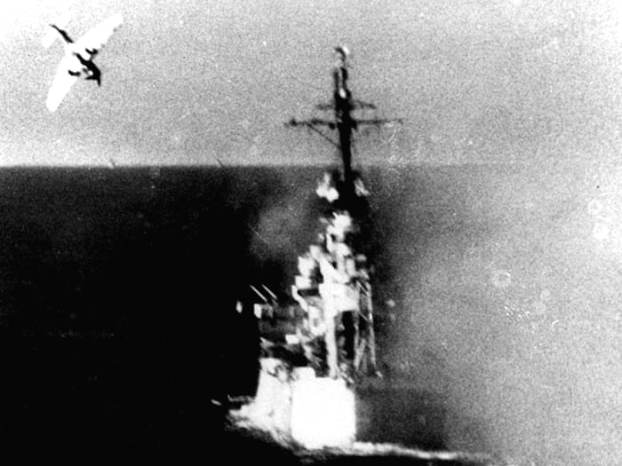
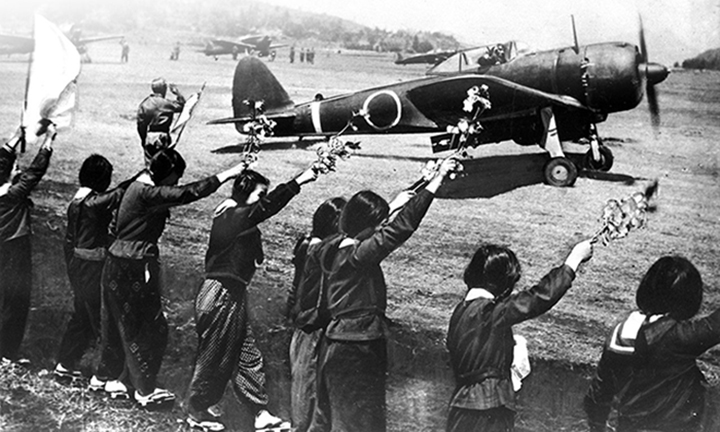

World War II was a bloody time. Many military tactics were used during this time period. One of the most deadly and grim of these tactics was the Kamikaze Corp used by the Japanese. Kamikaze translates to “Divine Wind” in english and is a reference to a typhoon that took out a Mongol invasion fleet that was threatening Japan from the west in 1281. The Kamikaze were Japanese pilots who would make deliberate suicidal crashes into enemy targets which were usually ships.
Most Kamikaze planes were ordinary fighters or light bombers that were usually loaded with bombs and extra gasoline before they would fly into their targets. A piloted missile was developed for the Kamikaze which was given the nickname “Baka” by the allies which translates to fool. The Japanese call these “Ohka” which translates to cherry blossom. The pilot had no means of getting out of the plane once the missile was fastened to the aircraft. The missiles were dropped usually from an altitude of over 25,000 feet and more than about 50 miles from the missile's target. After this the missile would glide for about 3 miles from its target before the pilot turned on its engines. Then the craft would accelerate to about 600 miles per hour to drive the explosive into its target. The explosive charge that was built into the nose of the plane weighed more than a ton.
There were many reasons why this attack strategy was implemented but the major one was how things were looking for the Japanese. Things were beginning to look very bad so they needed any last ditch efforts. The Japanese lost several important battles, a lot of their top pilots were killed, and their aircraft technology was beginning to become outdated. Another huge loss that they suffered was they lost their command of the air. They started to lose pilots faster than they could train replacements and Japan’s industrial capacity was starting to fall far behind the Allies. All of these factors along with the Japanese’s refusal to surrender led to the creation of Kamikaze tactics to defend against the Allies. Before the formation of the Kamikaze, pilots from both the allies and axis powers would make deliberate crashes as a last resort after their planes suffered a lot of damage. The reason they did this was because they were crashing anyway. People saw this as men who were mentally prepared to die.
The first officer to officially propose the Kamikaze tactics was Captain Motoharu Okamura. Okamura was in charge of the Tateyama base in Tokyo as well as the 341st Air Group Home. With his superiors, they arranged the first investigations into how they could use intentional suicide attacks. This meeting occurred in June of 1944. A few months later in August of 1944, it was announced by a news agency that a flight instructor whose name is Takeo Tagata was training pilots in Taiwan for suicide missions. According to a source the first Kamikaze mission occurred on September 13th, 1944. A group of pilots were sent to crash into carriers however, there is no record that these planes were successful. According to other sources, the USS Reno was destroyed by a Kamikaze plane on October 14th, 1944. A few days later the first major battle where the Kamikaze were deployed occurred.
From October 23rd, 1944 to October 26th, 1944 the Battle of Leyte Gulf occurred. On October 24th, the USS Sonoma was sunk by the Japanese. This ship is listed in some sources as the first ship to be sunk by the Kamikaze. This ship was destroyed before the Kamikaze force was set out. The first Kamikaze force was sent out on October 25th. This force was composed of five A6M Zero planes and was led by Lieutenant Seki and was escorted to the target by pilot Hiroyoshi Nishizawa where they attacked several escort carriers. One plane attempted to destroy the bridge of the USS Kitkun Bay but instead exploded on the port catwalk. Two others attacked the USS Fanshaw Bay but were destroyed by anti-aircraft fire. The last two ran at the USS White Plains. One was under heavy fire and trailing smoke so it aborted its current attack on the USS White Plains and instead hit the USS St. Lo. The plane destroyed the flight deck. By the end of the day on October 26th, 55 Kamikaze planes had damaged three large escort carries by the names of the USS Sangamon, Santee, and Suwannee as well as three smaller escorts: the USS White Plains, Kalinin Bay, and Kitkun Bay. In total, seven carriers were hit, as well as forty other ships. Five of those were sunk, 23 were heavily damaged, and the other 12 were moderately damaged. The Battle of Leyte Gulf showed the potential and destructive power of this new attack strategy that the Japanese had invented.
It was claimed by the Japanese forces that many people volunteered for the suicidal forces. Captain Motoharu Okamura said that there were so many volunteers for suicide missions that he reffered to them as a swarm of bees. This was because Bees die after they sting someone. Many people who became Kamikaze pilots believed that their death would pay the debt that they owed and show that they loved their family, friends, and emperor. Training consisted of incredibly strenuous training coupled with curle and torturous punishment as a daily routine. Daikichi Irokawa, who trained at Tsuchiura Naval Air base recalled that he was struck on the face a lot of times. It got to the point where his face was unrecognizable. He was also hit so hard that he would fall to the floor and was hit by clubs to get him to talk. The training was brutal and justified by the idea that it would install a soldier’s fighting spirit. However, this backfired and made a lot of pilots lose their patriotism. Pilots were also given a manual about how they were supposed to think, prepare, and attack. They were told to attain a high level of spiritual training and keep their health in the very best condition. They were there to make sure that the pilot was ready to die. The manual also stated that a pilot should not waste their life lightly and should return if they can not locate their target. A pilot that returned to base nine times would be shot. The manual was also very detailed about how a pilot should attack. It explains that they should aim for a point between the bridge tower and smock stages. They also were required to never close their eyes because this would lower the chances of them hitting their target. Before a plane hit their target they would yell “hissatsu” at the top of their lungs which translates to “certain kill” or “sink without fail.”
Kamikaze pilots received a lot of respect. They were seen as noble soldiers willing to sacrifice their lives for the country. Ceremonies were carried out before a kamikaze pilot departed on their mission. They would share a ceremonial cup of sake. If the pilot was an officer they would take their swords along, while normal pilots would not. Pilots were also equipped with a pistol so they could end their lives if they were in any danger of being captured. They would also wear a senninbari or belt of a thousand stitches which was given to them by their mothers. They also would compose and read a death poll which is a tradition that stemmed from the Samurai. Some pilots would fly near a mountain, look over their shoulders to see the mountain and the mainland and say goodbye to their country. The military was so serious about this system that if a pilot did not complete their mission they were stigmatized for years following the war. For some it would affect them for 50 years after the war.
CLICK HERE TO GO BACK TO THE HOMEPAGE